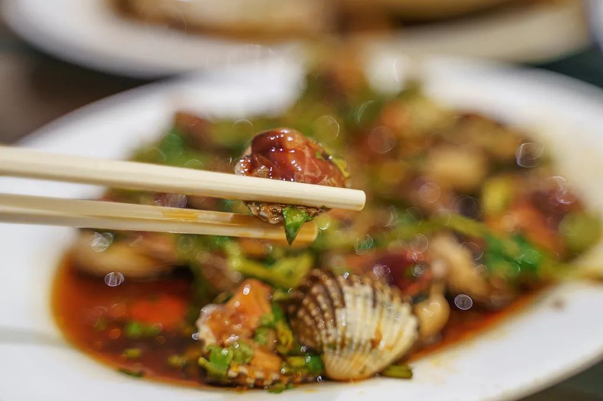
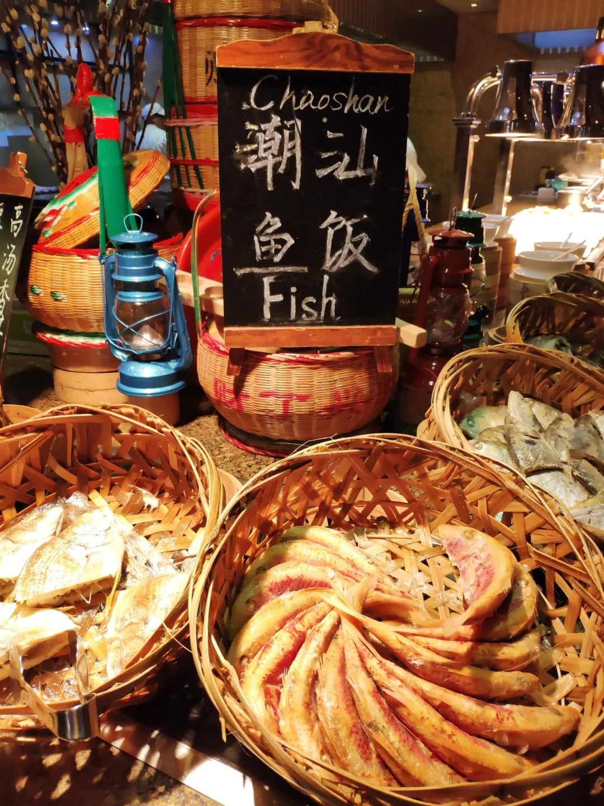

潮汕生腌
潮汕人和顺德人一样，也生吃水产，且更喜欢腌制。腌膏蟹、腌虾生都是潮汕名产，当然也可以像顺德人那样夹着调料吃生鱼片，潮汕人并不排斥，乐在其中。 还有一道著名的“腌血蚶”，让外地人看了心惊胆战：血蚶即是泥蚶，壳中有血红色的分泌液，吃法是拿开水直接对着血蚶淋上，烫不到一分钟，就可滤去热水。掰壳一看，鲜血淋漓。往掰开的血蚶上放上姜蒜酱油香菜等调料，就可以开吃了。

鱼饭
鱼饭是旧时海边渔民充饥之物，拿来当饭吃，故得此名。从海里捞上来的个头较小的鱼，长约一巴掌，拿个竹篓叠好放在一锅海水里烫熟，放凉之后就是鱼饭了[7]。 最地道的吃法是蘸普宁黄豆酱，一筷一筷拆下紧实的鱼肉蘸着吃。因为做法粗犷，所有内脏、鱼鳞都保留着，有些人甚至嗜好腥苦的鱼肚——那才是真正大海的味道，惊涛骇浪式的。